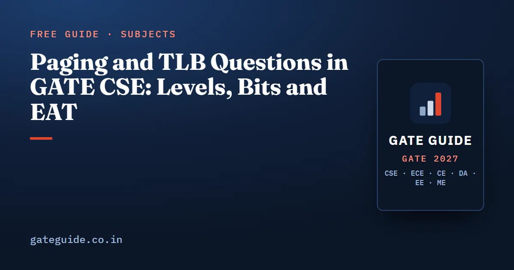

Paging and TLB Questions in GATE CSE: Levels, Bits and EAT

Paging questions in GATE CSE come in a small number of fixed shapes. You are given a virtual address size, a page size, a page-table entry size and sometimes a TLB, and asked for the size of the page table, the number of levels, the bits in each index field, the memory a sparse process really uses for its tables, or the effective access time. The arithmetic is powers of two. Marks are lost on bytes versus bits, on the outer table nobody counted, and on walking a three-level table once instead of three times.
In this guide
Key takeaways
- . .
- . .
- On a TLB miss with an -level table, you make page-table accesses plus one data access.
- The question states whether the TLB lookup is serial or overlapped with memory. Read that line before computing.
- . An inverted page table has one entry per physical frame, not per virtual page.
Where paging sits in the paper
The official 2027 CS syllabus lists "Memory management and virtual memory" in the Operating System section, unchanged from 2026. Third-party analyst compilations put Operating System at 5 to 16 marks per paper from 2009 to 2026, with a tight band of about 6 to 10 marks since 2018 and an overall average near 8.8. These figures are unofficial, analysts differ by 2 to 3 marks on borderline questions, and you should check the current notification for the pattern of your year.
Inside that block, paging arithmetic is the most dependable item. The book's own eight-factor scoring, which is the author's judgement rather than a measured probability, rates paging arithmetic and multi-level page tables at 90.5 (Very High) and TLB effective access time at 77.0 (High). The approximate PYQ reconstruction lists multi-level paging items in 2003, 2008 and roughly every other year up to 2026, and reports that 2024 to 2026 papers tended to combine multi-level paging with a TLB in one numerical answer question. The subject-level ranking is in the Operating Systems important topics guide.
The formulas you actually use
| Quantity | Formula | Typical trap |
|---|---|---|
| Offset bits | Page size given in KB, forgetting | |
| Number of pages | for virtual bits, offset bits | Using physical bits instead of virtual |
| Number of frames | Using virtual size here | |
| Single-level table size | PTE given in bits, answer wanted in bytes | |
| Entries per table page | Mixing up entries and bytes | |
| Levels | Not rounding up when bits do not divide evenly | |
| TLB reach | Multiplying by PTE size instead | |
| Inverted table size | Sizing it by virtual memory |
A plain translation is the cheapest 1-mark form. With 4 KB pages, the low 12 bits are the offset. Virtual address 0x3A7F2 splits into page 0x3A and offset 0x7F2. If page 0x3A maps to frame 0x15, the physical address is the frame number followed by the same offset, 0x157F2. The offset never changes during translation.
A multi-level question, worked end to end
Take a 39-bit virtual address, 4 KB pages and 8-byte page-table entries, with 16 GB of physical memory.
An 8-byte entry has room for the 22-bit frame number plus the valid, dirty and protection flags. The 1 GB flat table is why nobody uses one level here.
The address split is therefore 9 | 9 | 9 | 12: three index fields of 9 bits and a 12-bit offset. Had the page-number bits been 28, you would need levels, with the outermost level using only 1 bit. Setters ask for the outer level's size precisely because candidates assume every level is equal.
Memory actually used by a sparse process
Now let the process use only the bottom 6 MB of its address space for code and data and the top 2 MB for its stack. Work out what one table at each level covers.
The bottom 6 MB needs 3 innermost tables, all under one middle table. The top 2 MB needs 1 innermost table under a different middle table, since it lies in the last gigabyte. Add the single top-level table.
That is against 1 GB for a flat table. Two rules carry the marks: the outer table always costs a full page, and an inner table that is only partly used still costs a full page.
Effective access time with a TLB
The structure never changes. On a TLB hit you pay the TLB lookup and one memory access. On a miss you pay the TLB lookup, accesses to walk an -level table, and the data access. Weight the two by the hit ratio . For a serial lookup:
Use , and , with no page faults.
| Setup | Hit cost | Miss cost | EAT |
|---|---|---|---|
| One-level table, serial lookup | |||
| Three-level table, serial lookup | |||
| Three-level table, overlapped lookup |
In the overlapped case the TLB search runs alongside the memory access, so a hit costs only , while a miss still pays for the failed search before the walk begins. The question states which model it means, so underline that line before you start.
The reverse form asks for the minimum hit ratio that meets a target. For the three-level serial case and a target of 100 ns:
Notice how expensive misses become as levels are added. The one-level table already beats 100 ns at , while the three-level table needs almost 94 percent hits.
This is the same weighted-average idea as cache access time in COA, and it is worth preparing once in both vocabularies alongside the cache memory question patterns. If a page-fault rate is added, the fault service time enters as a third branch; the demand-paging version and the replacement traces that produce the fault count are covered in the guide to page replacement questions.
TLB reach and page size
TLB reach is the memory the TLB can map without a miss: . A 64-entry TLB with 4 KB pages reaches . With 2 MB pages the same 64 entries reach . Larger pages raise the reach and shorten the page table, at the cost of more internal fragmentation, since the last page of each region is on average half wasted. That trade is a favourite 1-mark conceptual MCQ.
Inverted and hashed page tables
An inverted page table keeps one entry per physical frame for the whole system, and each entry stores the owning process id and the virtual page number. With 16 GB of memory and 4 KB frames there are entries; at 8 bytes each the table is , however many processes are running. Compare that with 1 GB per process for the flat table above.
The price is lookup. You cannot index by page number, so the table is searched or, in practice, accessed through a hash on (process id, page number). Sharing a frame between processes is also awkward, since each frame records one owner. Analyst reconstructions show these as periodic, mostly 1-mark items with a falling trend, so learn the size rule and the two drawbacks and move on.
The traps in one list
- Using physical address bits to count pages, or virtual bits to count frames.
- Reading a PTE size in bits as bytes, or the reverse.
- Forgetting the outer table, or charging a partly used inner table less than a full page.
- Counting one memory access for the page walk on a TLB miss with a multi-level table.
- Adding a page-table access on a TLB hit.
- Assuming every level has equal width when the page-number bits do not divide evenly.
The cross-subject version is in common mistakes that cost marks in GATE CSE, and every formula above belongs on your formula sheet.
How to practise
Fix one configuration, such as a 32-bit or 39-bit address with 4 KB pages and 4-byte or 8-byte entries, and derive everything from it by hand: offset, pages, frames, flat table size, levels, bit split. Then change one parameter at a time, the page size, the PTE size, the address width, and watch which answers move. For EAT, write the hit and miss costs as separate lines before combining them, and redo each problem in both serial and overlapped form.
The Operating System chapter of the GATE CSE 2027 book works through the full set of paging patterns, including sparse layouts with several regions and combined TLB and page-fault questions, with the PYQ years for each pattern listed alongside.
Frequently asked questions
How do you calculate the number of levels in multilevel paging?
Divide the page size by the page-table entry size to get entries per page-table page, and take of that to get the index bits one level can resolve. Subtract the offset bits from the virtual address bits to get the page-number bits. The number of levels is , so that every table fits in exactly one page.
How many memory accesses happen on a TLB miss with a multilevel page table?
With an -level page table and no page fault, a TLB miss costs memory accesses to walk the tables plus one more access for the data itself, so in total. A TLB hit costs only the single data access. Counting the walk once instead of times is the most common error in two-level and three-level questions.
What is TLB reach?
TLB reach is the amount of memory the TLB can map at once, equal to the number of TLB entries multiplied by the page size. A 64-entry TLB with 4 KB pages reaches 256 KB. Using larger pages raises the reach without adding entries, which is why huge pages reduce TLB misses for programs with large working sets.
Why is an inverted page table smaller than a normal page table?
A normal page table has one entry per virtual page of each process, so its size follows the virtual address space. An inverted page table has one entry per physical frame for the whole system, so its size follows physical memory. Each entry must store the process id and page number, and lookup needs a search or a hash instead of direct indexing.
Is paging asked every year in GATE CSE?
The analyst reconstruction used in this guide lists multi-level paging items across many papers from 2003 to 2026 and TLB effective access time items in most years, and the reported 2026 operating system topics included multi-level paging with a TLB. The record is approximate and unofficial, so treat paging as a high priority topic without assuming any particular question.
Sources
- GATE 2027 official website (IIT Madras)
- GATE 2027 CS syllabus (official PDF)
- GeeksforGeeks subject-wise weightage for GATE CS
- GATE Overflow previous year questions
Dates, fees and the syllabus are set by the GATE 2027 organising institute and can change. Always confirm at gate2027.iitm.ac.in.